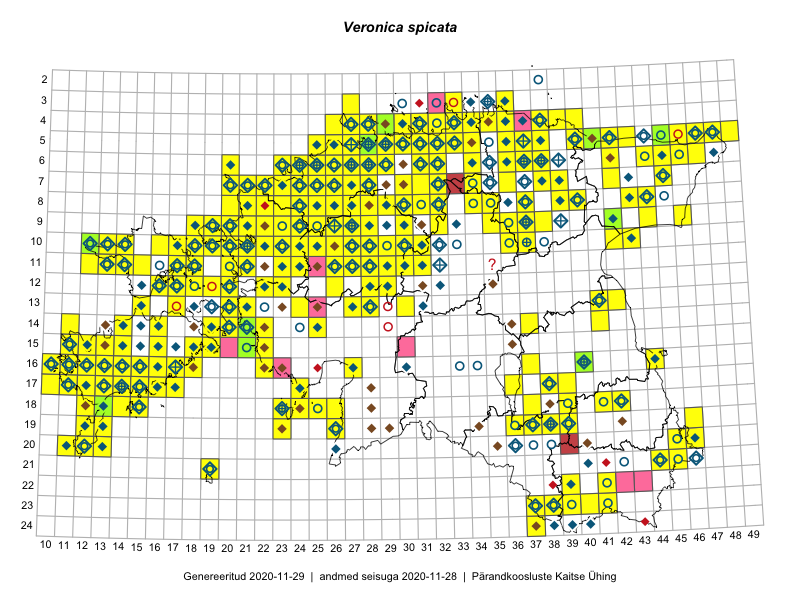

Veronica spicata
Uuendatud: 2016-12-01
Kaardile koondatud taksonid: Veronica spicata L.

Kaart põhineb 353 kirjel, neist vaatlusi 352 ja eksemplare 1.
Kuvatud viited 20 esimesele andmebaasikirjele, ülejäänud PlutoFis
- Thea Kull: 2015-07-07: 16-40: ala
- Rein Kalamees: 2015-06-05: 05-32: ala
- Toomas Kukk, Peedu Saar, Kersti Tambets, Sten Mander, Janika Sammasto: 2015-08-05: 17-14: ala
- Tiit Hallikma, Indrek Tammekänd, Toomas Kukk: 2015-06-09: 12-29: ala
- Rein Kalamees, Kersti Püssa: 2015-08-09: 05-31: ala
- Tiit Hallikma, Toomas Kukk: 2015-07-21: 05-45: ala
- Rein Kalamees: 2015-08-09: 05-31: ala
- Ott Luuk: 2014-07-24: 12-20: ala
- Peedu Saar, Ott Luuk: 2015-06-21: 14-41: ala
- Peedu Saar, Elle Roosaluste: 2015-07-12: 13-20: ala
- Rein Kalamees, Kersti Püssa: 2015-05-28: 20-45: ala
- Toomas Kukk, Kersti Tambets, Sten Mander, Janika Sammasto, Timo Luhamäe: 2014-07-30: 21-45: ala
- Rein Kalamees, Kersti Püssa: 2015-06-30: 04-31: ala
- Peedu Saar, Liina Oja: 2015-07-20: 08-44: ala
- Peedu Saar, Liina Oja: 2015-07-21: 06-44: ala
- Toomas Kukk, Eerik Leibak: 2015-07-29: 16-44: ala
- Peedu Saar: 2015-08-11: 13-41: ala
- Rein Kalamees, Kersti Püssa: 2015-05-27: 05-30: ala
- Rein Kalamees, Kersti Püssa: 2015-05-29: 04-38: ala
- Toomas Kukk: 2015-06-19: 06-27: ala